M 1 (Pancake Flipping)
Lecture - 9
Greedy Algorithms - Module 1 (Pancake Flipping)
(Refer Slide Time: 00:11)
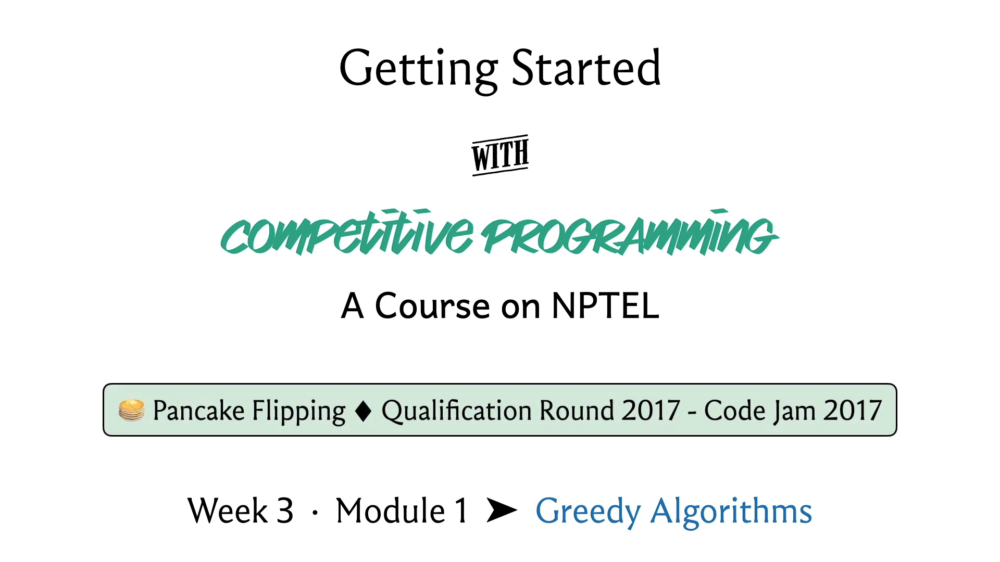
Welcome back to the third week of ‘Getting Started with Competitive Programming.’ I hope that you are excited about exploring a new theme. In this week, our focus will be completely on greedy algorithms. So, greedy is a fairly broad algorithms design, paradigm, or technique and it is fairly popular in contest programming.
In our first module, we are going to be illustrating the technique through a problem called ‘Pancake Flipping,’ which is from the Google Code Jam qualifiers back in 2017. Before we get started though, let me just say a couple of things about greedy algorithms in general.
(Refer Slide Time: 00:54)

In most algorithm textbooks, you will find a lot of warnings about greedy algorithms. For instance, here is the table of contents from Jeff Erickson's Algorithms, which by the way, is an excellent reference that goes along very well with the course incidentally.
(Refer Slide Time: 01:12)

The warning here is fairly explicit. It says greedy algorithms never work. Well, this is a bit extreme, they, of course, do sometimes work. But the thing to be careful about is that they often do not work despite being very natural sounding and being the most tempting first card approach to a problem. So, for most optimization problems, you will probably naturally come up with a greedy style or a greedy approach to it, which by the way, is essentially characterized by doing whatever you need to do with minimal effort. Whatever seems like the right thing to do, in the moment. I really do not know of a formal definition of what makes an algorithm greedy. Although there are some really interesting mathematical formalisms around characterizing when a greedy algorithm will actually work. If you are really interested in this, then the thing to look up is matroid structures.
(Refer Slide Time: 01:39)

But you can completely ignore this comment for now. If you are curious, there are, of course, more links in the description as usual for you to pursue further. But in any case, as I said, at a high level, a greedy strategy is something that feels like the right thing to do locally. But it turns out that long term, this could have ramifications that make your solution suboptimal and that is what happens most of the time. That is why you need more sophisticated techniques like backtracking or dynamic programming or divide-and-conquer or whatever else that help you get through the search space in a more meaningful way.
But it turns out that for many problems, even classic ones, greedy algorithms, sometimes, do get lucky and happen to work out all the way. Our goal with the lectures this week is to develop enough of a feel for why greedy algorithms do work when they do by giving you enough reasonably formal justification for the correctness of the approaches that we do discuss.
On the other hand, we will also try to go over examples of when greedy algorithms do not work, so that you develop the practice of looking for counter-examples, to see that these strategies that you have come up with might fail. However, during a contest, you might just find it easier to code up your greedy algorithm and see if it actually passes the tests or not. This would be a reasonable thing to do, especially if you do not have penalties for wrong submissions. It may just be the faster approach because greedy algorithms typically tend to be simple and not so difficult to go up.
So, you could do that quickly as a preliminary test if you have an approach for which you cannot quickly come up with a counter-example and it seems like it might be promising. However, outside of a ‘contest environment,’ it is definitely a good idea to actually go through the process of trying to understand why your greedy algorithm works or why it does not work.
This is also a good time for me to point out that ‘greedy’ being a fairly universal idea will keep coming up in future weeks as well. So, watch out for the reappearance of greedy-based ideas in various other contexts as we go along. With all that background in place, let us finally talk about ‘Pancake Flipping.’
(Refer Slide Time: 04:26)
 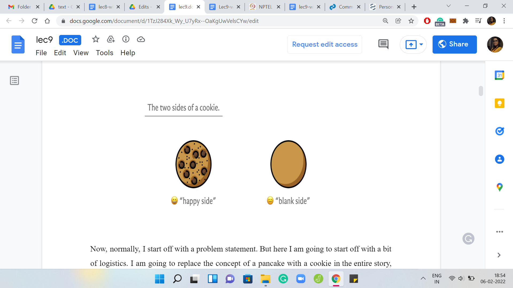
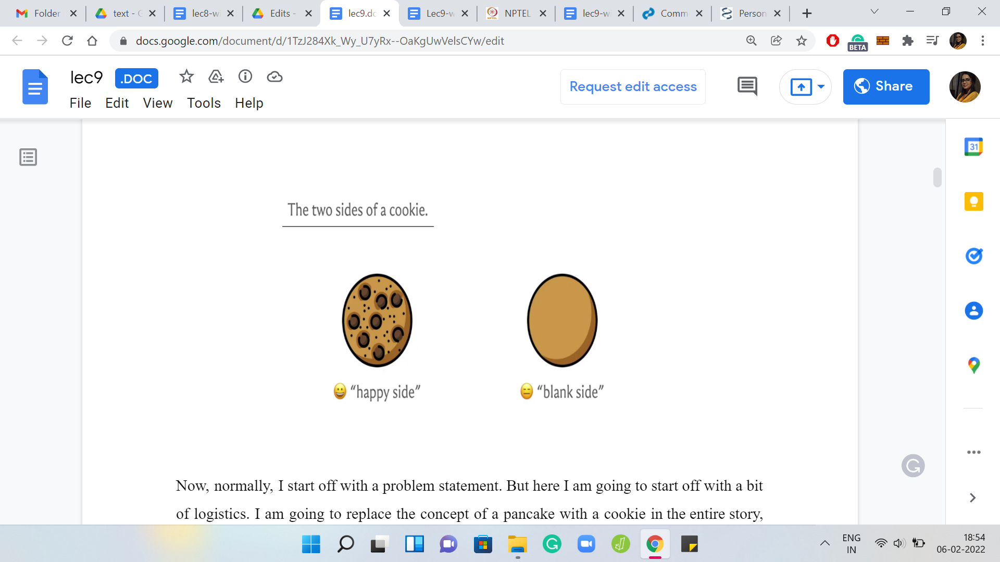
Now, normally, I start off with a problem statement. But here I am going to start off with a bit of logistics. I am going to replace the concept of a pancake with a cookie in the entire story, just because it was easier for me to find pictures of cookies. Sorry about that. But I promise you that nothing changes in terms of the mechanics of the problem statement or the solution for that matter. First, let us talk about the two faces of a cookie. You distinguish between the top side and the bottom side of a cookie.
The top is going to look like this (center image) throughout the slides and the bottom is going to look like that (rightmost image). According to the terminology in the problem statement, these are called the ‘happy’ and the ‘blank’ sides respectively. The top side has the chocolate chips and it is the happy face and the back has nothing and it is the blank side.
(Refer Slide Time: 05:26)
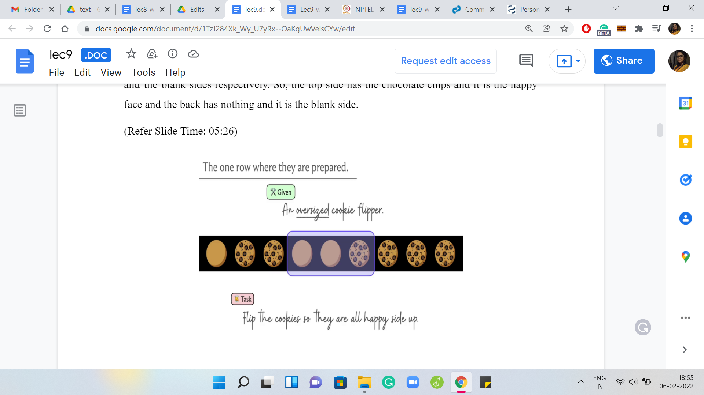 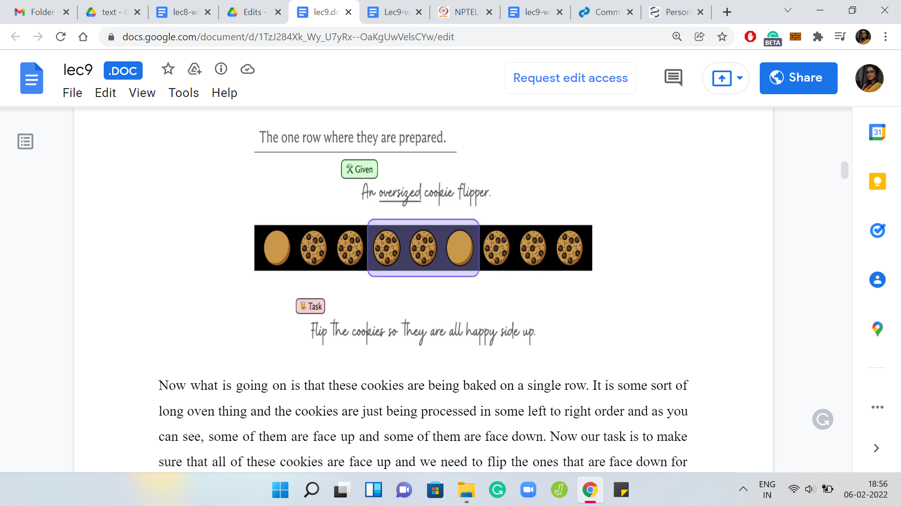
What is going on is that these cookies are being baked on a single row. It is some sort of long oven thing and the cookies are just being processed in some left to right order. As you can see, some of them are face up and some of them are face down. Our task is to make sure that all of these cookies are face up and we need to flip the ones that are face down for this to happen.
What we have at our disposal is not something that can flip a single cookie at a time and the oven is too hot for you to do that directly. You have to use a flipper. But unfortunately, the only thing you have been given is an oversized cookie flipper. It is something that can flip cookies in batches.
Here is an example of an oversized cookie flipper of size three. It can flip any three consecutive cookies at once and notice that it flips them one by one. It does not change the ordering of the cookies; the cookies stay in place. You can imagine scooping up the cookies from the front and just turning them over. So, the left to right order is not affected but the state of all the individual cookies basically flips and gets reversed.
(Refer Slide Time: 06:55)


Let us do another example. Suppose we move the flipper over here and flip again. Notice that we go from being ‘face-down, face-up, face-up’ to being ‘face-up, face-down, face-down.’ As usual, our first question would be, can we always manage what we have set out to do? We have a row of cookies, some of which are face up and some of which are face down. We also have at our disposal this K cookie flipper. So, K is the number of consecutive cookies that can be flipped in one shot.
(Refer Slide Time: 07:09)
 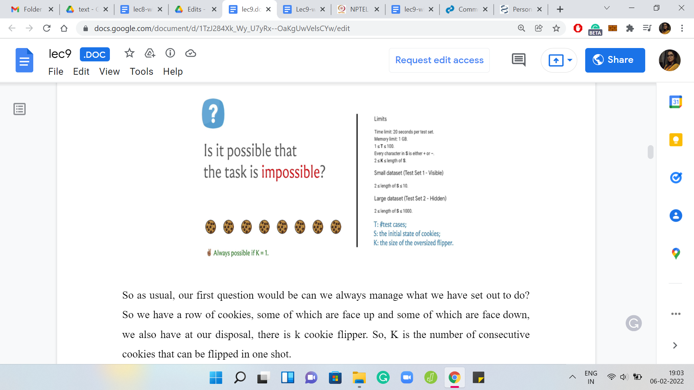
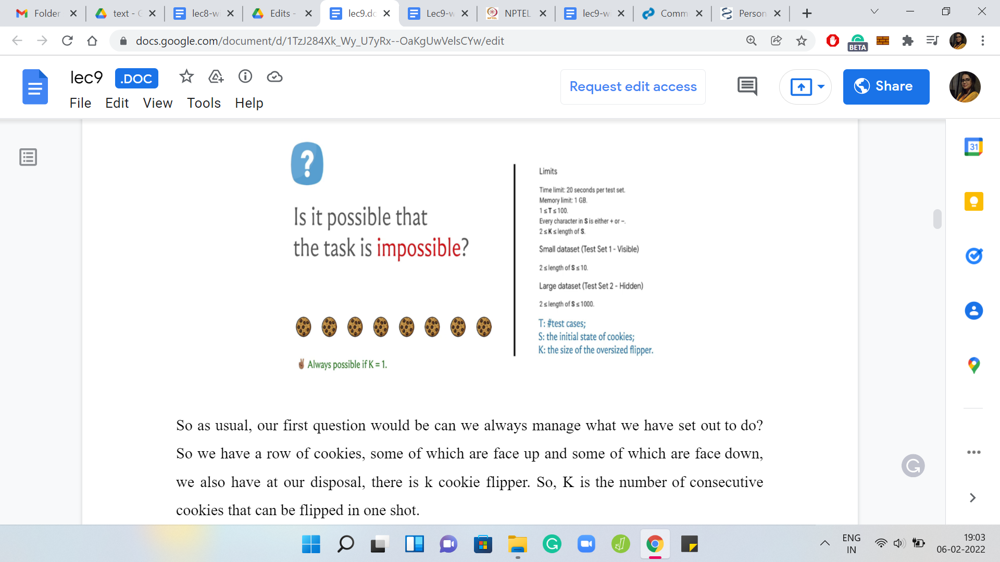
Once again, remember that the cookies stay in place. The left to right order is not reversed. It is only the individual states that are flipped and they are guaranteed to be flipped. It does not depend on the skill of the person that is using the flipper. The cookies definitely get flipped, they do not drop anywhere, they do not get lost, etc., etc.
That is the mechanics of the problem, hopefully, clear at this point. The question I am asking is, can we always do this? I have for your reference the limits that are given in the problem statement. Let us just go over a little bit of notation. The initial state of all the cookies is given by a string S and the encoding is that it is a ‘+’ if it is initially face-up, and it is a ‘-’ if it is initially face-down.
Remember, face-up is what we call the happy side and face-down is the blank side. What do you want to know is if you can use a K-sized cookie flipper to fix up all of them, which is to say make everybody face up at the end of the day. Take a pause here and think about whether you can come up with scenarios where this task is impossible or with an argument for why even if it takes some time and it is a tedious process, possibly, but you will still always be able to manage.
Hopefully, you had a chance to think about this and notice that there is something interesting going on with the limits for K. We see that K is at least 2 and notice that if K was in fact 1, which is that you have a flipper, which is like an ordinary cookie flipper, it is not an oversized flipper, it lets you flip one cookie at a time. Then, you can always fix any sequence of cookies by just going to the ones that are facing the wrong way and flipping them over. This is probably not such an exciting question anymore and perhaps that is why the range of K is between 2 and something. It is truly an oversized flipper.
(Refer Slide Time: 09:51)
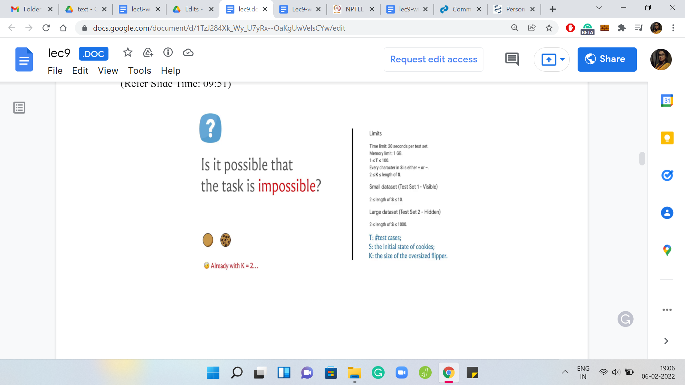 
Notice that when K = 2 already, it is not very hard to come up with an example, where it is impossible to achieve this task. Again, this is a bit of a spoiler alert. If you did not have a chance to pause before, maybe you want to think about this now with this hint in place.
Notice that even with K = 2, which is the most basic kind of an oversized flipper that you can be working with, you could get stuck with just 2 cookies in front of you. If one of them is facing the right way and the other is facing the opposite way, then no matter how many times you try to flip them over, you will just get them to being in the opposite situation, but it will never really get fixed.
Notice that you cannot flip something at the edge of the oven. Essentially, once you have reached the last K cookies on this row, you cannot flip anything that is after that because your pancake flipper just does not have enough place to fit in. You can imagine that it is not an open space where it can hang over the edge. You really get stuck at the very end!
For instance, just to make this specific. If you are here, then you might think: Let us flip once to fix the state of the first cookie and now from here, let us try to just flip the second cookie onwards. What I was saying is that it is not allowed in the definition of this problem. There is no onwards from the second cookie, if you have a pancake flipper of size 2 or even more. This is not going to work. You will have to flip both of the cookies that you have in front of you in sync and that is why the situation can never be fixed.
There are clearly situations that are impossible and our task at a high level boils down to being able to identify these and distinguish it from those cases where there is a feasible strategy for flipping everything over. In that case, our task is also to additionally find the minimum number of flips that we need to make everything work. Before we start thinking about an algorithmic strategy, let us just continue making some preliminary observations. Here is the first question that I would like to pose to you.
(Refer Slide Time: 12:18)


Do you think the order in which we make these flips matter? Suppose somebody comes up to you and says, look here is what we can do for this example. We could flip from the first location, then we could flip at the second location, and then we could flip at the seventh location. So, you could try executing these flips and see what happens.
(Refer Slide Time: 12:43)


But then somebody else comes along and says: No, let us flip at the seventh location first, and then go back and flip at the second location, and then flip at the first location. What do you think? Will the outcomes be for these two different ways of doing it? Will the final state be the same or will it be different? If you can think of some other ordering of these three flips, then try that as well and see if you get to a different final configuration.
More generally, if you have a set of flips, where each flip can be uniquely pinned down by identifying the position at which the flip begins and once again, remember that your legitimate starting positions are between the first position and the cookie that is at the N-K+1th location.
Any location in this range is a valid location for you to start off a flip. Now from here, what we really want to think about is whether the sequence in which we perform these flips matters or not. What do you want to do is either come up with an example of a set of flips that can be played out in two different sequences and they lead you to two different final outcomes. Or, you want an argument, which says that no matter which sequence you pursue these flips in, the final outcome will always be the same. Which one is it? Give it a thought and come back when you are ready. Hopefully, you had a chance to think about this.
(Refer Slide Time: 14:10)
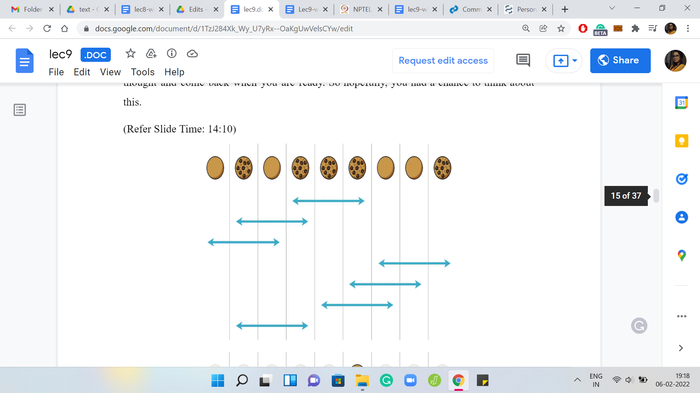 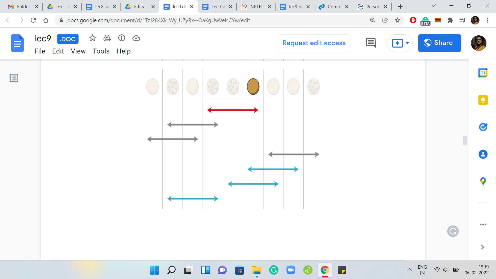
As usual, let us try to work through this in the context of a specific example. Let us say that we want to perform the flips that you can see come up on your screen. By default, let us say that we just perform them in the order of appearance from top to bottom. Let us also try to live this experience through the lens of a specific cookie.
Let us just focus our attention on the sixth cookie that is on the table right now, just as an example, and let us try to focus on the experiences that it goes through as you perform these flips. The first flip does affect the cookie. It is going to get flipped; its state is going to change. The second and the third flips do not influence the state of this cookie. In fact, even the fourth one does not touch this cookie at all, misses a set by a whisker. Right now the state of the cookie is just that it was flipped once from the beginning of the process.
(Refer Slide Time: 15:11)
 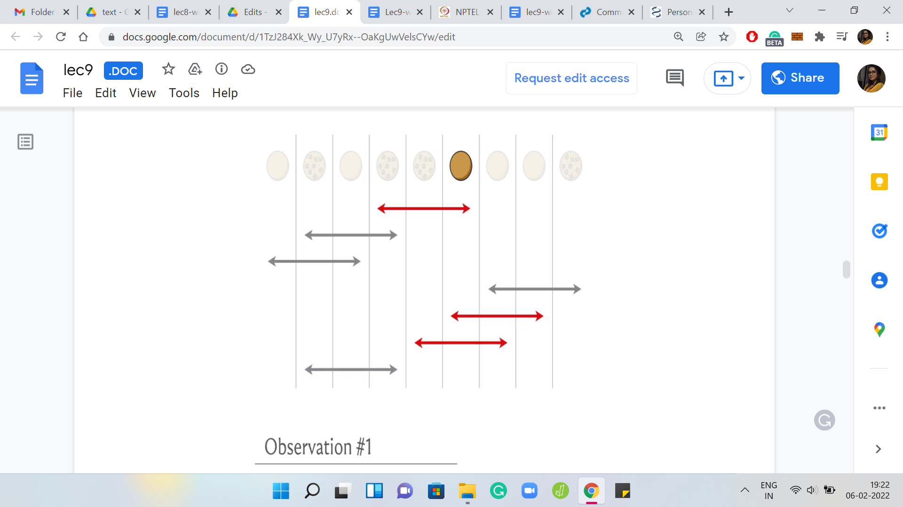 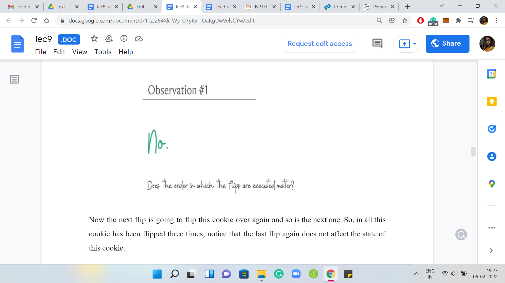
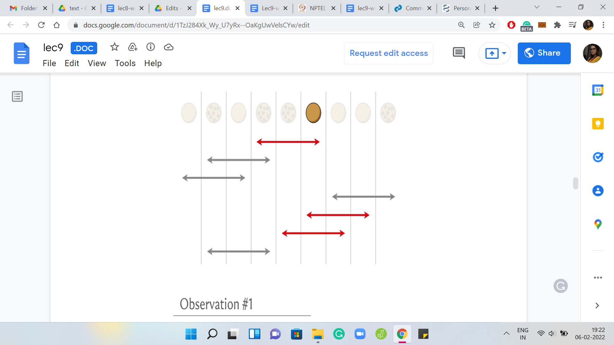 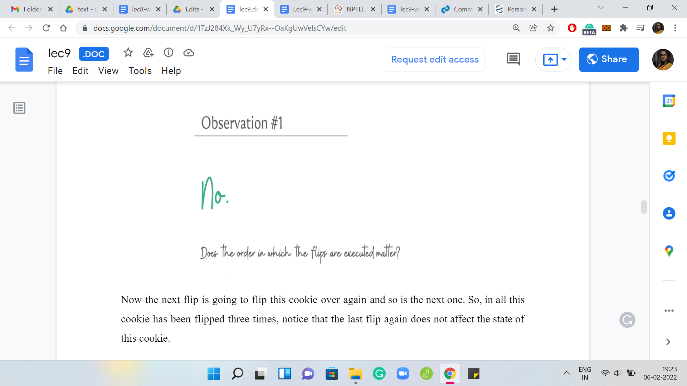
The next flip is going to flip this cookie over again and so is the next one. In all, this cookie has been flipped three times. Notice that the last flip, again, does not affect the state of this cookie.
At the end of the day, this particular cookie was flipped three times and that is going to be true no matter what order you perform the flips in. Hopefully, that is clear. Notice also that there was nothing special about the sixth cookie in this list. Whatever we said is true for every single one of them. Therefore, no matter what the order is in which you perform a set of flips, the final outcome is going to be the same, so the order does not matter.
(Refer Slide Time: 15:53)
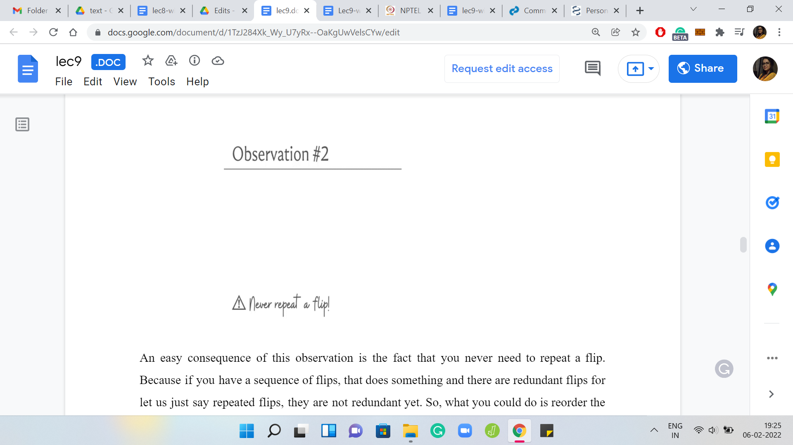
An easy consequence of this observation is the fact that you never need to repeat a flip. Because if you have a sequence of flips, that does something and there are redundant flips or let us just say repeated flips, they are not redundant yet. What you could do is reorder the flip so that all the repeated ones come one after the other. Now notice that all these repeated flips are not really doing any valuable work for you.
The only thing that matters is the parity of the number of times you repeated them. If there is a flip that you perform, say 6 times, then that is as good as not performing the flip at all. That will be the same thing. If there is a flip that you perform 7 times, then that is equivalent to performing it just once. So, why would you perform all of these extra flips? Remember that we are trying to minimize the total number of flips that get us to the answer. We know that without loss of generality, we can assume that flips are never repeated.
(Refer Slide Time: 16:47)
 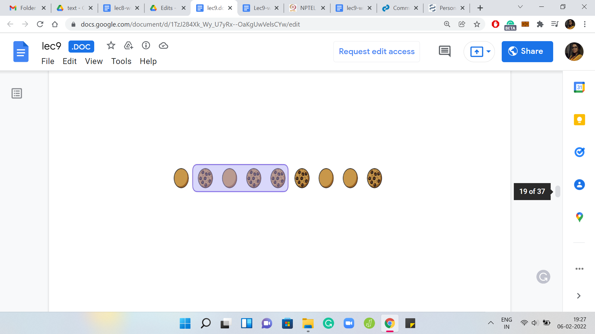 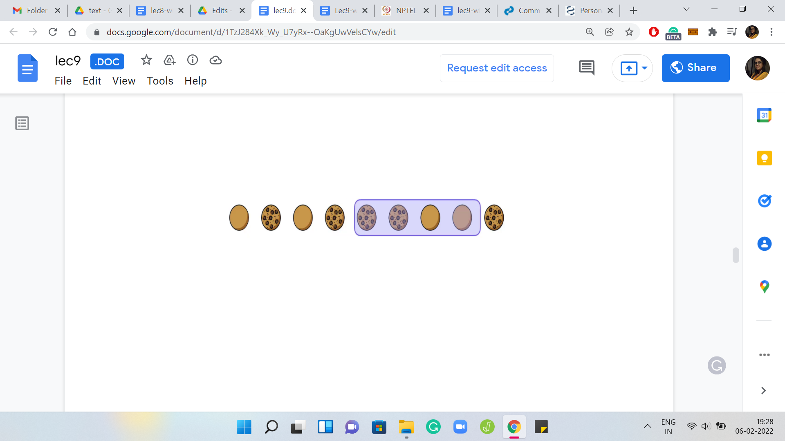
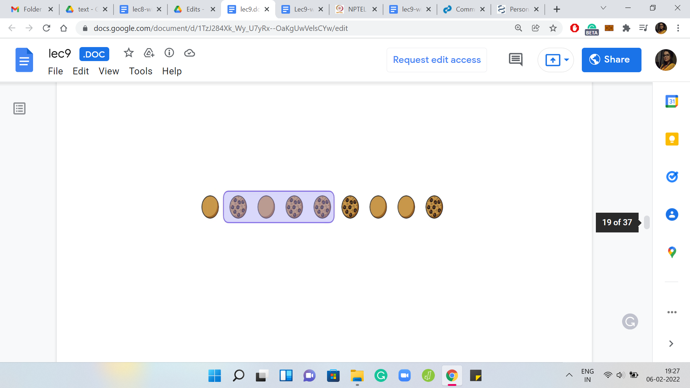 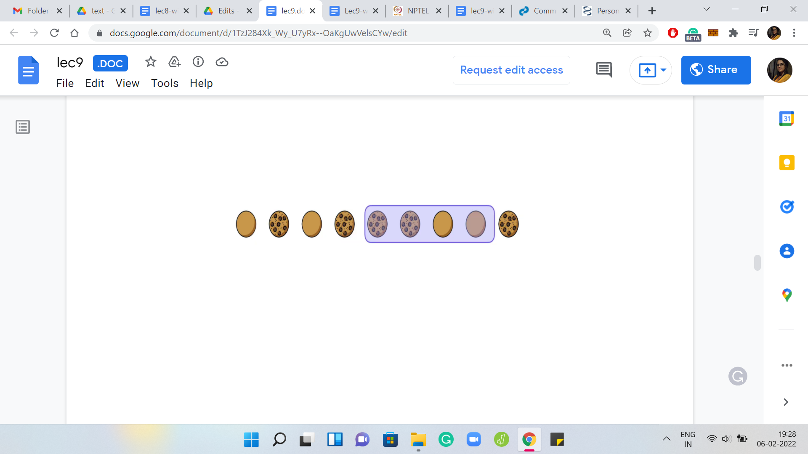


Let us go back to something that we have said before, which is the total number of possible flips that can happen in the first place. Notice that the legitimate locations where you can start to flip are the locations including the leftmost location on the table and all the way up to the N-K+1th location.
At the very end, as we said, there is not enough room and further flips are not possible anymore. You have these ‘N-K+1’ possible flips and at this point, you might be tempted to think about a brute force approach to solving the problem. Given that there are only so many flips you can make and given the fact that the order does not matter, the question really just boils down to which flips are you going to make? Because we also know that flips are never repeated.
What is the complexity of a brute force approach based on all the observations that we have made so far? Think about that for a minute and come back when you are ready. The dominant term in the complexity of the brute force approach is going to be ‘2N-K+1.’
It turns out that you could just try all possible subsets of locations where you want to actually flip. If you try all of them and then simulate the flips and basically check if everything works out, then essentially, you are going to be trying all possible subsets of a set of size ‘N-K+1’ and that is going to be the complexity. There is going to be a bit of a polynomial overhead.
But I have not written that down because this is really going to be, as I said, the dominant term. If you wanted to do it properly, the running time analysis, then you should also account for the amount of time it takes for you to actually simulate the flips and check if things work or not.
Even without these observations, you could just try to brute force your way through the space of all possible flips using something like a BFS over this space. You could say that two states are adjacent, if say, reachable one from the other via a single flip at some location. I am not going to elaborate too much on the strategy. But essentially, there are other approaches in the spirit of brute force that would also work if you were working with a small data set on this problem.
However, that is not going to scale when you are working with large data sets. We need to think about this some more. This is where the greedy ploy comes into play. Let us think about what is the absolute minimum work that we need to do at every stage.
(Refer Slide Time: 19:28)

Starting from left to right, let us begin by focusing on the very first cookie that we encounter, which is facing the wrong way. This right here is the leftmost cookie that has a blank side up, and notice that any valid solution will have to flip this cookie. Now in our solution, what we are going to do is position our first flip to start at this location.
Notice that all the cookies that have appeared before this are facing the right way, just by definition, and it seems wasteful to start a flip anywhere earlier. Because it seems to be just unsettling things that are already fixed. So as they say, let us not fix what is not broken and position our first flip at the location of the leftmost cookie that is facing the wrong way.
(Refer Slide Time: 20:14)


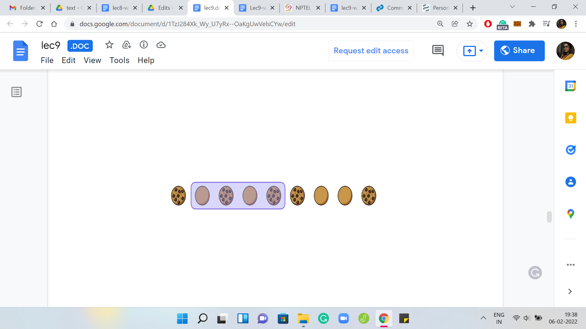 
We start there, then we execute the flips in the program. You could basically simulate these flips. Then you move the flipper along to the very next cookie that is facing the wrong way. You just walk along, stop when you see another cookie that is facing the wrong way, you position your next flip there and you keep doing this till you reach the very end.
I am not actually executing these flips for you and I will leave this as an example that you can work out. Feel free to pause the video here and, sort of, go through the process. Now let us think about when we would declare an actual answer versus when would we say that the initial configuration is impossible with the value of K that we have been given to work with.
When we finish, when we stop and get stuck, notice that we have actually fixed the states of the first ‘N-K+1’ cookies, just by the way that we have been performing these flips. That is easy to check.
(Refer Slide Time: 21:17)

The only thing that remains to check is the state of the last ‘K-1’ cookies. If these last ‘K-1’ cookies are not already facing the right way, there is nothing that we can do to fix them anymore. At this stage, we will declare that this situation is impossible. But if the last ‘K-1’ cookies are facing the right way, then we will say that we are done and we will report the number of flips that we have made.
Notice that when your algorithm actually outputs a number, it is definitely doing the right thing because we have seen that we only made those flips that we were absolutely compelled to do. We know that any solution and, in particular, the optimal solution also must make at least that many flips and because we have actually demonstrably managed with that many flips because notice that by construction when we are done and we actually output a number, we have also given you a strategy for making a sequence of flips, which will actually fix everything and that is visible.
Whenever we output a number, we know that we are at par with optimal and we are doing the right thing. The only thing to be careful about is when we report impossible, then we need to be sure that there is no other solution that actually manages to flip everything to its correct position while we just maybe missed out on it because of our greedy choices.
You can actually argue that this algorithm does the right thing, even when it reports impossible. I will leave that as a little exercise for you to figure out in terms of what is the logic for why our impossible output is also always correct. If you are stuck on this, then you can go back and look at the notes on the course website and you will find a more elaborate argument then.
In terms of implementation, you could exactly implement what we have discussed so far and that will work. It will have a complexity of something like ‘order N2’ or ‘N*K’ because you are doing sort of a linear pass. But within each pass, you are trying to figure out if a flip needs to happen or not and if it does need to happen, you do have to simulate the flip.
That is going to be K units of work in every iteration. Now, this is good enough to pass the large data sets. Please feel free to give it a shot and let me know how it goes. In the meantime, let us discuss a small improvement to the implementation that we have just described. What we will do is, trade-off some space for time, which is to say that by keeping track of a little more information, what we will be able to do is bypass the simulation, which forces us to do order K extra work in all those iterations where we do decide to make a flip.
As a result, what will happen is that we will end up with a purely linear time algorithm. One that runs in order N, but it uses order N extra memory to do this additional book-keeping. This is an optimization that has also been described in the official editorial and as it is pointed out there, you do not actually need this improvement for the large tests to go through.
Nonetheless, it is a useful trick to be aware of. That is what we are going to try and understand now and this is also the version that we will implement. However, if you do have an implementation of the simulation-based approach and you want to share it with us, then please feel free to initiate a pull request in the GitHub repository where we are maintaining the codes for these lectures.
(Refer Slide Time: 25:01)

Let us go back to the original state of the array, and once again, begin with the left-most cookie that needs a bit of a nudge. Our overall strategy will still be to have this ‘for’ loop that is running through the initial state array, and the way we will deal with what we decide to do when we have to make a flip will be slightly different from before. Here is the first location where we do need to make a flip.
The natural thing is to track this in a flip or an answer variable to remember that a flip had to be made and now in the simulation approach. What you would have done is you would have either flipped the state of the next ‘K-1’ cookies as well by actually changing the state array or you would have tried to keep track of this information in some other auxiliary array by recording number of flips at every location and incrementing them as appropriate.
Notice that we really want to avoid having to do something ‘K’ times or ‘K-1’ times or whatever. Think about what is it that we really need to know. When we are processing the cookie at the jth location for some ‘j,’ what we really need to know is: How many times is this cookie been flipped so far? A hint to that is in the flip variable - the flip variable tells us how many flips have happened so far.
That may not be the number of times that this cookie has been flipped because many of these flips have happened far away and are not relevant for this cookie. What we really need to know is how many of these flips are obsolete for the current variable. I should not say the current variable, but rather the current cookie, the one that is being processed right now.
What we do is we keep an extra array called the ‘obsolete flips array.’ There what we do is, we make a note of the fact that this flip, the one that is the leftmost flip on your screen right now, is one that should not be counted when you are processing the K+1th cookie away from the current location.
It becomes an obsolete flip for that cookie. So, when you are processing that cookie in the future, when you look at the number of flips that have happened, you are going to also subtract whatever is being stored in the ‘obsolete flips array’ at that point, to get the accurate number of flips that actually affect this cookie.
Of course, you might say, look, this flip is obsolete not only for the K+1th cookie from the current location but for all the ones after that as well. Why do not we increment the values in obsolete flips array for all of the future locations as well? Well, we could do that. But that would defeat the purpose of getting to something faster. Because then that would mean actually doing ‘N-K’ amount of work in the worst case.
So, we do not want to do that, instead what we will do is, we will just do some sort of a running sum of the number of obsolete flips. In particular, when I land at the jth cookie, I just look at the obsolete flips value of the j-1th cookie. The number of flips that have been obsolete for the previous cookie - they are all certainly obsolete for me as well. Because if those flips could not reach the cookie to the left of me, then they can certainly not reach the cookie at this location ‘j.’
We borrow that value from the previous values stored in the obsolete flips array, and then we also lookup whatever was hinted to us from the flip that happened from this action that we are doing right now. That gives us the total number of obsolete flips, which we subtract from the actual number of flips to recover the correct number of flips that this cookie was actually involved in.
This may be a little bit tricky to fully understand. Feel free to pause and take a moment here to really absorb this. Hopefully, it will also become clear as we go into the implementation. Before we can get to the implementation though, there is still one piece left that we need to understand.
Once we are processing the jth cookie, we need a way to figure out if it needs to be flipped or not. When we were doing simulations, this was really easy, because you just looked at the state of the cookie, because it has actually gone through all the flips that have happened so far. The state of the cookie is reflective of its current state.
We know that if it is facing the correct way we can skip it, and if it is blank side up, then we need to flip it. But now what you have is the original state of the cookie from the state array. You have this number which is the number of flips that it has experienced so far, which once again, you obtained by subtracting from the flips variable the ‘obsolete flips’ value.
Based on these two pieces of information, which is the original state of the cookie, and the number of flips that it has experienced, can you come up with criteria for when you should actually flip this cookie? Take a moment here to think about this because once you have come up with these criteria, you would have a complete description of the algorithm that you need to implement.
You just go through the whole set of cookies from the first position to the N-K+1th of the position, do the flips that are necessary, and then you essentially continue doing this for the last ‘K-1’ cookies as well. But this time, if your criteria do trigger and it says, ‘look you have a cookie that needs to be flipped,’ then instead of incrementing the flips variable and proceeding, what you will do is you will break out of the loop and declare that the situation is impossible.
If however, your loop survives for the last ‘K-1’ cookies as well, then you can just report the number that you have in the flips variable. That is your entire algorithm. The only piece that you need to fill in is what is the criteria for determining if the cookie that has been processed currently needs to be flipped or not. Once again, to recap, you have the value of the original state of the cookie and the number of flips that it has experienced so far, what would you do from here? Hopefully, you had a chance to think about this. The criteria are actually fairly natural.
(Refer Slide Time: 31:28)

If the cookie was plain side up in the original array and the number of flips that it has experienced is even that means all these flips have canceled out. Even at this stage, the cookie is still the wrong way up. You do need to flip it.
On the other hand, suppose the cookie was facing the right way, to begin with. But now it has experienced an odd number of flips, then you are in trouble because you have actually broken something that was correct in the beginning. Now you need to flip it again, to fix the situation and bring it back to the ‘happy’ state.
That is your criteria for determining whether the current cookie needs to be flipped or not, and as we were just describing before, with this piece of the puzzle in place, you now have the entire algorithm in your head, hopefully, at this point. Once again, if you want to give this shot, this would be a good time to pause this video and try out the implementation yourself.
The implementation that we have for you in the video is going to be in Python. We only use very simple data structures and it should be completely straightforward to translate this into a language of your choice.
(Refer Slide Time: 32:42)

To begin with, we just read all the input. ‘T’ is the number of test cases and every line is one test case. The first string is going to be a sequence of characters with no spaces, which essentially is composed of pluses and minuses, reflecting the original state of the cookies. Then there is a space and there is a number ‘K.’
That is essentially what we are reading in two variables named ‘S’ and ‘K.’ S is going to be a string and K is going to be a number. Let us just use ‘N’ to record the length of the string because that is going to come in useful for stopping criteria, for our main ‘for’ loop. We have N being the length of the string or the number of cookies, to begin with.
We also have this obsolete flips array that we just described. To begin with, everything in this array is 0. There are no obsolete flips to record before the process has even started. We also declare an answer variable. In the description in the video, previously, we call this the flips variable. But you could call it whatever you like in this code. This is the answer variable, which has been initialized to 0.
(Refer Slide Time: 33:58)

Let us do our first ‘for’ loop, which goes from the start of the array all the way up to the N-K+1th cookie. Notice that because we have 0 indexing, you really need to go on the up to the N-Kth cookie. The way range works in Python, it does not actually go to the last number, the last number is omitted. That is why we have ‘j’ in the range ‘0’ to ‘N-K+1.’ This does the right thing.
The initial state of the cookie can be read off from S of j; we do that and we store that in ‘state.’ The first thing we do is borrow the obsolete flips from the previous obsolete flips value. Notice that you might get an out-of-range error when j is 0 because what is j-1? This being Python, it is just going to read of the last element in the array.
This is an initial condition thing. You could think of it as an edge case. I have not really bothered to say j > 0 because there is no harm, to begin with, every value is 0. What happens in the first iteration really does not do any harm here. In a different language, you may have to be more careful about what happens at the first index.
In general, what you are doing is, you are borrowing the number of obsolete slips from your neighbor because all of those flips are obsolete for you as well. Of course, your current value needs to remain anything that has been explicitly pointed out, you need to retain that value as well.
That is why this ‘+’ equals, you are not copying the value over. You are using that value to increment whatever value you had in the first place. This correctly records the number of flips that should not be counted for the jth cookie or pancake. The next thing that we want to do is, record the number of flips that are relevant.
That is going to be the total number of flips that have happened so far, which has been stored in the answer variable and you subtract from this the number of obsolete flips. That should be fairly straightforward, and this is the number of actual flips that we need to consider.
If you remember from a few minutes ago, we had come up with this criteria for whether the current cookie under consideration should be flipped or not, and what we said was that it should be flipped exactly when either the original state was plain and the number of flips is even or when the original state was happy but the number of flips was odd.
Let us just record these into Boolean variables. If you are writing this code during a contest, you will probably not really do this. You will most likely write an ‘if’ condition straight out. But I think this is easier to read and since we have all the time, right now, we have these descriptive variables here.
Original destroyed is true, if the original state of the cookie was a plus or a happy state and the number of flips is odd, which is to say that you actually destroyed what was correct, to begin with. The other variable is blank, not fixed, which is to say that the original state of the cookie was that it was plain side up and the number of flips is even. We still have work to do here. If either of these variables happens to be true, then we should actually go ahead and make a flip.
(Refer Slide Time: 37:27)

The way we record that is to increment the answer by 1 to say that 1 more flip has been made, and equally importantly, we need to go to the obsolete flips array and make a record there. Look at the cookie that is K steps away from the current one and actually K+1 steps depending on how you are counting. Basically, this is the earliest cookie. The cookie with the smallest index not affected by this flip. We do need to make a note of that. That is what we are doing here.
The obsolete flips variable needs to be appropriately incremented, as I said, you could also just increment all the values for obsolete flips for all larger indices. But that would be very expensive to do. We are not doing that and instead, we do the trick of borrowing a previous value as we did at the start of this ‘for’ loop. That is essentially the first part.
(Refer Slide Time: 38:26)

The second part is to go over the remaining ‘K-1’ cookie. We run the exact same loop, we do the exact same thing. The only difference is that this time, if you realize that a flip needs to happen, then you do not have the facility to actually make it happen. At this point, you have realized that you have an impossible task upon yourself. You declare the answer to be impossible and you break out of the loop.
Now, if you do survive the loop, then the answer variable does have the right number. You can just go ahead and directly print the answer. There is a string conversion here because Python will probably not print the integer directly. The string conversion will not hurt if the answer was reset to a string and again, I think if you have a language where you have to worry about types, you may be a little bit careful about how you do this. You may need to store extra flag variable or something like that to detect if you went into that breakpoint in the second ‘for’ loop.
Whatever you have to do is going to be completely straightforward. So with that, we actually come to the end of pancake-flipping. I hope that whatever we discussed made sense. At any rate, the more basic version of the algorithm without this optimization should be extremely doable, where you just go over the state array and simulate all the flips that need to happen.
Just check if the last ‘K-1’ pancakes got automatically fixed or not. Hopefully, the optimization also made sense and the one thing that I leave you with is for thought is something I have mentioned earlier about trying to convince yourself that whenever the algorithm says impossible, it did not miss some way of doing things correctly.
We have already argued that if you output a number, then that is going to be the right number. You just need to make sure that your impossible outputs are also accurate. It turns out that they are, but you need to convince yourself using some sort of a logical argument. So, with that, we come to an end of this video and next time we will talk about another fun problem called ‘Islands War.’ I will see you there and thanks so much for watching as always. Bye for now!